| Eclipse Corner Article |

Summary
This article is a roadmap for writing Eclipse plug-ins destined for the international market. We'll begin with a brief review of the motivations and technical challenges of internationalization, followed by step-by-step instructions of how to internationalize your Eclipse plug-in.By Dan Kehn, Scott Fairbrother, and Cam-Thu Le
IBM Eclipse ISV Enablement (Jumpstart) TeamAugust 23, 2002
Editor's note: This article reflects Eclipse release 2.0.
An old joke in the internationalization community goes like this:
"A person who speaks three languages is called trilingual. And a person who speaks two languages is called bilingual. So what do you call someone who only speaks one language?"<insert dramatic pause here>
"American."
Today, providing a software product solely in English is no longer acceptable from a usability, quality, marketing, and in some cases, legal standpoint. Enabling your product for the world market simply makes economic sense. And the enablement process is relatively straightforward, as this article will show.
A few notes before we begin. Because the Eclipse Platform adopts the internationalization implementation provided with the Java SDK, it's helpful to read the Java Tutorial: Internationalization trail before continuing. The tutorial presents a fine overview of the issues and steps involved in the process. We will assume that you've already read the tutorial so we can underscore the key points, surface other noteworthy items, and cover Eclipse-specific issues and steps in this article. And when you run into unfamiliar terminology or acronyms in this article, jump to our glossary.
Internationalization is the process of creating software for the world market. Besides the economic benefits, some countries require products to pass certain localization requirements set by the government before it can be introduced to their markets.
The process of internationalition is usually accomplished in two steps:
Monoglots take note: This is the beginning of your sensitivity training. There may be a quiz at end of this article. :-)
Let's begin with a distillation of the list of culturally dependent data presented in the Java Internationalization tutorial, reordered by the likelihood that the typical developer will encounter it, and followed by details on each:
Messages, labels on GUI components
Resource bundles nicely handle language-dependent
texts. The strategy is either to load all
strings at once into a ResourceBundle subclass, or to retrieve them individually.
The Eclipse Java Development Tooling (JDT)
in version 2.0 provides wizards to support
the detection of translatable strings. We'll
return to them shortly in Internationalization steps.
Loading translated strings into memory is only the first step. The next step is to pass them to the appropriate controls for display (such as a label, text field, menu choice, etc.). The page designer and programmer must work together to assure that the chosen layout allows for appropriate resizing and reflowing of the dialog. The layout support in the Standard Widget Toolkit (SWT) library relies heavily on the programmer to "do the right thing" by specifying layout descriptions that react appropriately to changes in field sizes. The article Understanding Layout in SWT covers the implementation issues in detail.
This is particularly important because text length increases during translation. English phrases are often shorter than their equivalent translations, usually on the order of 40%. Font sizes also may need to be modified to accommodate the local language.
Online help (*.html), Plug-in manifest (plugin.xml)
These forms of text content are more involved than simple key/value-oriented
properties files, so the steps to their externalization are slightly more complex.
In the case of the manifest file, it is coupled with a similarly named property file, plugin.properties, containing only the externalized text. Special care must be taken with manifest files like plugin.xml and fragment.xml, since the attributes of the tags can contain both translated and untranslated text. Consider the benign example below:
Listing 1. Plug-in manifest file, before translation |
Here we see a mix of translatable text, untranslatable text, and "gray
area" translatable text, all as tag attributes. Clearly the
id and class attributes are not translatable,
since they represent programming identifiers. It is equally certain that the
name attribute should be translated.
You might be tempted to consider the
version attribute (because of the locale-dependent decimal separator) or provider-name attribute (because of the locale-dependent legal attribution "Corporation")
as candidates for translation, since they will be displayed to the end
user. However, version numbers are generally left untranslated for two
reasons: end users attribute little meaning to their numeric value, and
programmers sometimes write code that expects version numbers to be a composed
string like "3.5.4". It is arguably a better design decision
that the version information be stored as separate numbers like major,
minor, and service update to avoid the need to parse a version string,
but that discussion is beyond the scope of this article.
The provider-name may be left untranslated as well, since "Corporation" has legal meaning that can defy accurate translation. After identifying what text needs to be externalized, our example now looks like this:
|
where plugin.properties contains the externalized string, "Jumpstart
Example Plug-in" associated with the key plugin.name.
This simple example demonstrates that translating isn't simply providing equivalent words or phrases for your text; it also involves an understanding of the local cultural considerations and potential legal impacts. This is why a translation professional is necessary, as well as translation verification testing.
Numbers, dates, times, currencies
The Java library includes classes that handle the necessary formatting for numbers
(decimal separator, thousands separator, grouping), dates (MDY, DMY, first day
of work week), times (12- or 24-hour format, separator), and currencies (local
symbol, shown as suffix or prefix, leading separator or none).
Phone numbers, postal addresses
These are more subtle and less common text
translation concerns, but still noteworthy.
Many applications simply allow free-format
entry of phone numbers since there are so
many local variations. Postal addresses are
straightforward: Adding a "State/Province"
field and allowing for multiple address lines
is generally sufficient.
Honorifics and personal titles
Though less common in the United States, the proper enablement
of honorifics (Mr., Mrs., Dr.) is considered absolutely necessary elsewhere to avoid a
serious breach of etiquette.
Measurements
These are less frequently encountered. This
involves substitution of measurement indications
with corresponding conversion (for example, miles
versus kilometers). In many cases, users
will need either simultaneous display of
a measure in different units, or an easy
way of toggling between them.
In general, products should select regionally neutral sounds, colors, graphics, and icons.
This means no Homer Simpson "D'oh!" sound associated with error messages. If you're thinking that no serious development organization would do such a thing, consider an icon that is typical of those that are proposed and rejected:
The developer wanted to convey a metaphor for "IP router" by using a symbol harkening back to a national highway that traversed the United States from Chicago to Los Angeles, called Route 66. Most Americans would find this metaphor obtuse; imagine the confusion of the hapless non-US user.
Similarly, the image below may be intuitive to many North American users:
But in recognition studies, others from outside the United States have guessed that this is a birdhouse. This is the more universally accepted image for mail:
To avoid confusing and potentially offensive visuals, the best course is to engage professional graphic artists who are aware of cultural issues.
Now let's turn to the actual steps for internationalizing your Eclipse plug-in:
We'll discuss each of these steps in detail.
Fortunately, Eclipse's Java Development Tooling provides considerable help to properly separate translatable strings. The Source > Find Strings to Externalize menu choice displays the Externalize Strings wizard. This wizard will lead you through the steps to locate hardcoded strings in your code, classify them as translatable or not, then modify the code to use a resource bundle where appropriate.
We'll introduce the Externalize Strings wizard with an example, the canonical "Hello World" before using the wizard:
Listing 3. Hello world, before translation |
Selecting HelloWorld.java and then Source > Externalize Strings will display the wizard shown in Figure 1:
Figure 1. Externalize Strings wizard
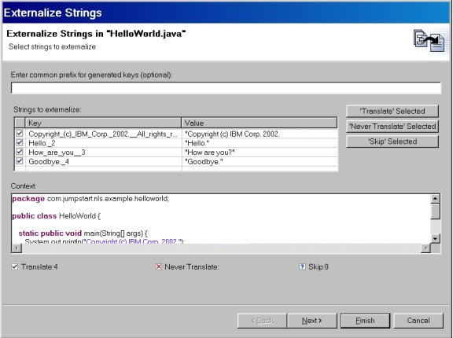
By selecting an entry from the table and then one of the pushbuttons to the right, you can mark the strings as belonging to one of three cases:
// $NON-NLS-1$"// $NON-NLS-1$ comment marker indicates which
string is not to be translated in the case where are there are several strings
on a single line. For example:
x.foo("Date", "TOD", "Time"); // $NON-NLS-2$
Here the middle parameter is flagged as non-NLS. The other two are skipped.
Returning to our example, note that the total number of strings for each category
is summarized below the list. The key names of the externalized strings are
auto-generated based on the string value, but they can be renamed directly in
the table. In addition, an optional prefix can be specified (S_
in the example below).
Figure 2. Externalize Strings wizard
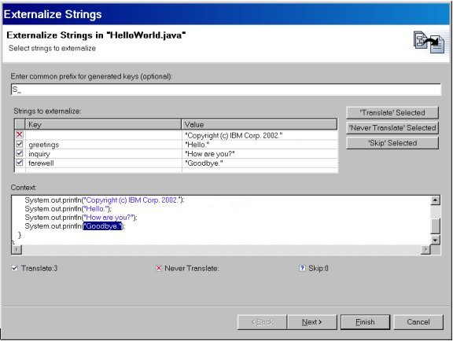
Hint: Clicking the icon in the first column of a given row will advance to the next choice: Translate, Never Translate, or Skip.
Now that we've identified what strings are translatable, continue to the next step to choose how they will be externalized. Here's the page displayed after selecting Next; the Property file name and resource bundle accessor Class name were modified to more specific values than the defaults:
Figure 3. Externalize Strings wizard
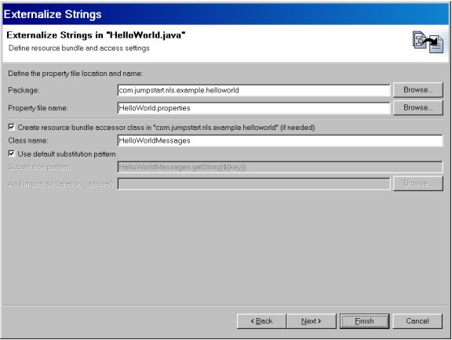
The resource bundle accessor class will contain code to load the properties file and a static method to fetch strings from the file. The wizard will generate this class, or you can specify your own existing alternative implementation. In the latter case, you may want to uncheck the Use default substitution choice and specify an alternative code pattern for retrieving externalized strings. If the accessor class is outside of the package (for example, a centralized resource bundle accessor class), you can optionally specify that you want to Add [an] import declaration to the underlying source.
The Externalize Strings wizard uses the JDT Refactoring framework, so the next two pages should look familiar. First, a list of warnings:
Figure 4. Externalize Strings wizard
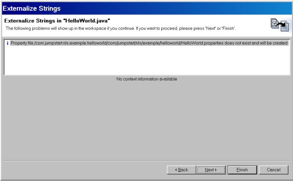
And finally a side-by-side presentation of the proposed changes:
Figure 5. Externalize Strings wizard
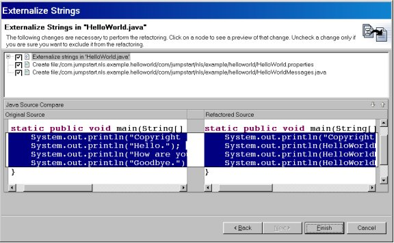
Once you select Finish, the wizard performs the source code modifications, creates the resource bundle accessor class, and generates the initial properties file. Here is the code for the standard resource bundle accessor class:
Listing 4. Standard resource bundle accessor class |
The only variation in this generated code
is the value assigned to the static final,
BUNDLE_NAME. Before we continue to the next
step, below are some noteworthy guidelines
contributed by Erich Gamma and Thomas Mäder
of the JDT team.
These guidelines are designed to:
To achieve these goals, we propose the following guidelines:
For example, all the strings for the JDT
search component are in SearchMessages.properties,
with key/value pairs like:
SearchPage.expression.pattern=(? = any character, * = any string)
ShowTypeHierarchyAction.selectionDialog.title=Show in Type Hierarchy
Let the Externalize Strings wizard generate this class. It should be named like the properties file. So in our example, it would be called SearchMessages. When you need to create formatted strings, add the convenience methods to the bundle accessor class. For example:
Listing 5. Static resource bundle accessor class |
There is no easy way to correlate a computed key in the code with the key in the properties file. In particular it is almost impossible to determine whether a key is no longer in use.
Example: PackageExplorerPart.title
Not all externalized text is simply words and phrases that will be translated to a target language. Some are more specifically related to your plug-in's implementation. Examples include properties, preferences, and default dialog settings.
Here are a few specific examples that might find their way into a properties file:
For those plug-ins that subclass from AbstractUIPlugin, NL-related parameters can also be found
in its default
preference stores (pref_store.ini) and dialog
settings (dialog_settings.xml). The Eclipse Workbench itself does not use
default preference stores, opting instead to store defaults in properties files
and then initialize them via AbstractUIPlugin's initializeDefaultPreferences(IPreferenceStore) method.
Please refer to the detailed coverage in the Java Tutorial: Internationalization trail.
Testing the readiness of a product for translation is non-trivial and beyond the scope of this article. However, the follow-on article How to Test your Internationalized Eclipse Plug-in presents strategies for validating the NL-sensitive aspects of your product.
At this point, we could simply copy our domestic language property files to similarly named files with locale-specific suffixes (for example, MyMessages_xx.properties, where xx is the language), and move to step 6, Prepare and send domestic language materials for translation. In this case, the product is delivered with its code and whatever languages it supports as a single install.
However, this approach has a few drawbacks. Firstly, the code and its national language resources are intermingled in the same directory / JAR file. If the translation lags the code delivery, the plug-in JAR file must be updated, despite the fact that the underlying code is unchanged. Secondly, files other than property files are not inherently locale-sensitive, so they must be segregated to separate directories for each language (for example, HTML, XML, images).
To address these issues, the Eclipse Platform introduces the notion of another reusable component that complements plug-ins, called a plug-in fragment. A plug-in fragment provides additional functionality to its target plug-in. At runtime, these plug-in contributions are merged along with all dependent fragments. These contributions can include code contributions and contributions of resources associated with a plug-in, like property and HTML files. In other words, the plug-in has access to the fragment's contents via the plug-in's classloader.
A plug-in fragment is an ideal way to distribute Eclipse-translated information including HTML, XML, INI, and bitmap files. Delivering translations in a non-intrusive way, the Eclipse Platform translations are packaged in fragment JAR files and are added to existing Eclipse installations without changing or modifying any of the original runtime elements. This leads to the notion of a language pack.
The Eclipse Platform merges plug-in fragments in a way that the runtime elements in the fragment augment the original targeted plug-in. The target plug-in is not moved, removed, or modified in any way. Since the fragment's resources are located by the classloader, the plug-in developer has no need to know whether resources are loaded from the plug-in's JAR file or one of its fragments' JAR files.
The Java language supports the notion of a language pack with the resource bundle facility. The Java resource bundles do not require modification of the application code to support another language. The *.properties file namespace avoids collisions through the following naming convention: basename_lang_region_variant. At runtime, the ResourceBundle facility finds the appropriate properties file for the current locale.
The approach to deploying files such as HTML and XML files in fragments is slightly different than Java resource bundles in that the Eclipse fragment uses a directory structure to sort out the different language versions.
Example fragment contents
The plug-ins and the plug-in fragments reside
in separate subdirectories found immediately
under the eclipse subdirectory. Looking at
our example fragment, as deployed on a German
system, we see an \nl folder, fragment.xml
and an nl1.jar file.
Figure 6. Fragments subdirectories
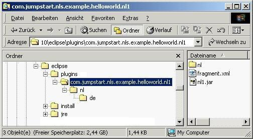
Typically, translated *.properties files are suffixed according to the resource bundle rules and deployed in JAR files. In contrast, when a view needs an input file type whose name is not locale-sensitive like resource bundles (such as *.xml), we define a subdirectory structure for each language version of the file. The de subdirectory above is one such example, where de = German.
Fragment manifest
Each plug-in folder can optionally contain a fragment
manifest file, fragment.xml. The manifest
file describes the plug-in fragment, and
is almost identical to the plug-in manifest
(plugin.xml), with the following two exceptions:
class attribute is gone since
fragments do not have a plug-in class. They
just follow their target's specification.Manifests used to describe a national language
fragment are typically quite simple, specifying
only the <fragment> and <runtime>/<library> tags. Here's the example
fragment manifest file in its entirety:
|
The <fragment> tag attributes are:
name
-- User-displayable name for the extension.id
-- Identifier for this fragment configuration.
Used to uniquely identify this fragment instance.plugin-id
-- Reference to the target extension point. This plug-in fragment merges with this target extension.plugin-version
-- Version of the fragment plug-in. version
-- Version specification in major.minor.service
format.type -- The default is '"code". Specifying "resource" indicates the library includes resource files and no code. This improves overall performance significantly because resource-only libraries are skipped when loading code.The <runtime> section contains a definition of one or more libraries that make up the
plug-in fragment runtime. The referenced libraries are used by the platform
execution mechanisms where the plug-in loads, merges, and executes the
correct code required by the plug-in. The name attribute accepts a library name ("nl1.jar" above) or directory
containing resources. A directory reference must contain a trailing path
separator. Optionally, the specification may include a substitution variable.
In the example above, the second library includes a variable substitution
$nl$ based on the locale; it is used above to add a language/region specific
folder to the library search path (e.g., a locale of "it" = Italy,
"fr" = France, or "de" = Germany, etc. would add the
corresponding plug-in subdirectory it/, fr/, or de/ to the list of searched paths). The value of the nl, os, ws, and arch substitutions variables can be displayed and modified on the Window > Preferences > Plug-in Development > Target Environment page. The nl substitution variable is used in those cases where it is not possible or practical to suffix files with the locale name.
Building a fragment
The Eclipse Workbench comes with a tool used
in plug-in development: the Plug-in Development Environment
(PDE). The PDE contains support for developing
plug-in fragments.
Let's now examine how to build a fragment for national language translations using the PDE. There is no practical limit to the number of languages in a given fragment. The fragment then is the basis of our "Language Pack" containing one or more language translations. However, in this example, we'll confine our language pack to the German translation.
To build a plug-in fragment, start the New Project wizard (File > New > Project...), select the Plug-in Development category, then Fragment Project type. On the first page of the New Fragment Wizard, type the project name. Keep in mind that the project name will also become the fragment ID. For example, starting a project adding national language support to the HelloWorld example, we would name our project "com.jumpstart.nls.example.helloworld.nl1". The trailing ".nl1" is not required, but does help distinguish fragments that represent "language packs" from fragments that add additional code and functionality.
Figure 7. Starting a fragment project
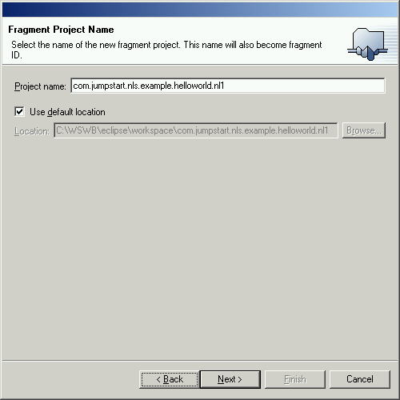
Press Next. We see the default values for the project's source folder and runtime library on the second page:
Figure 8. Defining fragment folders
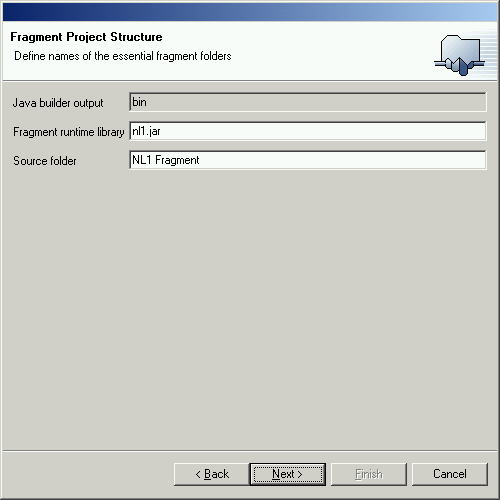
These values seem reasonable, so pressing Next again, we arrive at the "Fragment Code Generators" page. Select the second radio button to indicate we want to create the fragment manifest file from a template, then select the Default Fragment Generator wizard from the list.
Figure 9. Selecting the default wizard
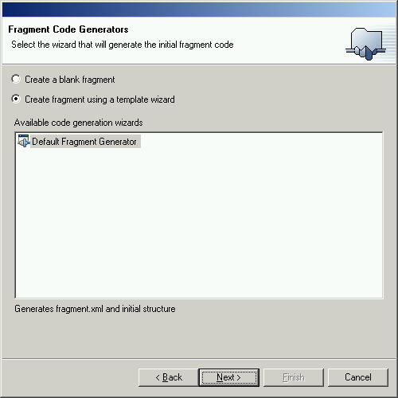
After pressing Next, we see the "Simple Fragment Content" page. This page has two entries used to target our fragment on an existing plug-in. We must supply the plug-in target id and version. We can use the Browse button to select the plug-in that we want to extend.
Figure 10. Targeting the fragment
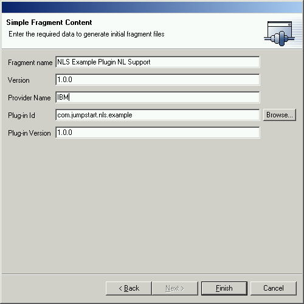
Now let's proceed to the fragment manifest editor, which is similar to the plug-in manifest editor in that it is a multi-page editor with Overview, Runtime, Extensions, Extension Points, and Source pages.
Figure 11. Fragment manifest editor
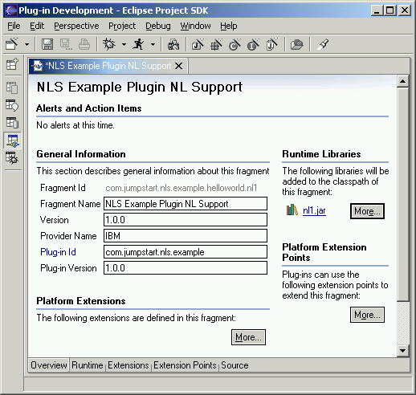
Notice the tabbed pages corresponding to sections of the fragment xml file. We will be using the Runtime page to point the fragment classpath at the libraries containing our translations.
We specified the nl1.jar in the new fragment wizard so that library is already included in the classpath of this fragment. What is missing at this point is the inclusion of the locale-specific folder. You can add new runtime libraries by selecting More from the Runtime Libraries section of the Overview page, or by turning to the Runtime page, selecting New..., then entering $nl$/.
Figure 12. Fragment runtime information
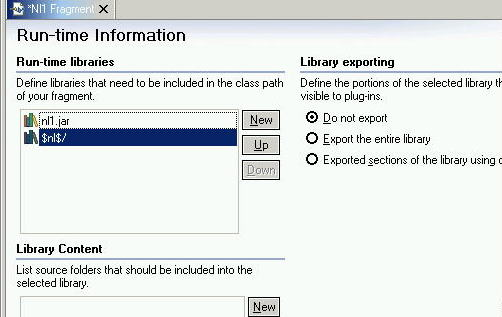
Taking a look at the Source page of the fragment manifest editor, we see that the PDE generates all the XML necessary to describe our plug-in fragment.
Figure 13. Fragment source
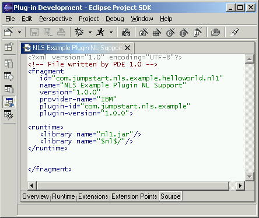
Producing correct translations requires specific skills, which you must purchase. (Unfortunately, your four years
of high school German classes do not qualify you!) There are many
companies that will gladly produce professional-quality translations.
For the Eclipse Platform, this step was accomplished in two phases. The first phase involved sending all the externalized text to a translation center. This first-pass translation is done "out of context." The translator does not see the running product, nor do they have product-specific experience. They have tools at their disposal to help speed the translations and assure consistency, but ultimately they rely on translation testers to validate the running product in the target language (the second phase).
The risk and consequences of performing an out-of-context translation, the results of which are sometimes quite amusing, are discussed in the follow-on article How To Test your Internationalized Eclipse Plug-in.
Now having the translated files, we reassemble them in their appropriate directories/JAR files as described in step 5, Create initial translated plug-in fragment. The NL1 Fragment folder contains language versions of the plugin.properties file. After translating the HelloWorld.properties file to German, we rename it to HelloWorld_de.properties and store it in the NL1 Fragment source folder. Note that the nl\de (German) folder is new and is created manually, not by the PDE. These language-specific folders segregate the versions of non-properties files (such as hello.xml shown below) as we add translations over time.
Figure 14. Reassembled fragment project
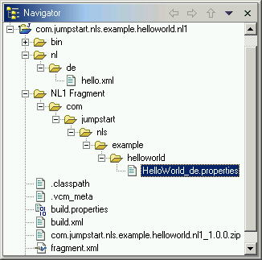
Be aware that the translated properties files will very likely contain accented characters that are codepage dependent, so properties files must be converted to the ISO 8859-1 codepage expected by the PropertyResourceBundle class. The native2ascii utility will handle codepage conversions and insert any necessary Unicode escapes.
The term Unicode escape deserves a bit more explanation. The native2ascii conversion utility, included with the Java SDK, accepts a source encoding and produces output encoded in ISO 8859-1, plus it transforms characters outside this codepage to the notation known as Unicode escapes. This notation is \udddd, where dddd = the codepoint of the desired character in the Unicode codepage.
Here's an example. Consider
the French phrase "Son père est
allé à l'hôtel"
(his father went to the hotel). This contains
four accented characters that
are not part of the Latin-1 codepage. Transforming
this phrase with the native2ascii utility
yields:
Son p\u00e8re est all\u00e9 \u00e0 h\u00f4tel
There are no longer any accented characters, and the resulting string is
composed entirely of characters having codepoints that are found in ISO
8859-1. But what are the \u00e8,
\u00e9, \u00e0, and \u00f4 that were substituted?
They are the Unicode codepoints of the accented
characters in \udddd notation.
A little caveat when using the native2ascii utility:
It assumes that the source encoding is the
same as the active codepage of the machine
that executes it. However, translators typically
save the translations in their default country
codepage, and this codepage is different
in each country and each operating system.
So the person responsible for integrating
the translations will need to either (a)
know in which codepage that the translators
save their files, or (b) ask that they save
it in a common codepage. You can specify
the source encoding when invoking native2ascii
with the-encoding parameter.
Tip: If you are uncertain of the source codepage, you can spot-check the output of native2ascii against Unicode codepoints of common accented Latin characters table later in this article. If you find \udddd notations in your converted files that are not in this table (such as \u0205), it is likely that you specified the incorrect source encoding. There is no equivalent spotcheck for DBCS languages, where practically all the characters in the converted files are Unicode escapes. You simply have to be careful and validate against the running product.
Testing the translation merits its own article. The follow-on article How to Test your Internationalized Eclipse Plug-in describes the process and lessons learned during the recent translation verification of the Eclipse Platform, and includes a view (an Eclipse plug-in, of course!) for performing a quick check of property file translations.
Fragment sources, similar to plug-in sources,
may be packaged in a JAR file. Using the
PDE to generate the JAR package, select the
"fragment.xml" file and choose
"Create Fragment JARs..." from the pop-up menu. A wizard will guide you in creating a build script to produce all the required JARs for your fragment. If your fragment.xml file includes translatable strings, separate them into a plugin.properties file (just as you would for a plugin.xml file, i.e., there is no such thing as a "fragment.properties" file). This works because fragments are an extension of a plug-in and therefore inherits it dependencies, including its plugin.properties file values.
Figure 15. Selecting the fragment.xml file
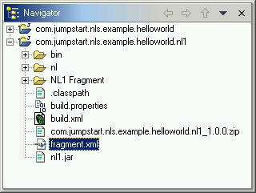
To deploy this example fragment, copy the fragment.xml, the \nl directory, and JAR to the com.jumpstart.example.helloworld.nl1 subdirectory in the plugins directory. This completes our example and the steps for internationalization.
Enabling your product for the world market simply makes economic sense. And the steps above show that the process is relatively straightforward. Now here's that quiz we mentioned in the introduction:
True or False: The majority of IBM's worldwide software sales revenue is within the United States.
False. Indeed, more than 50% of IBM software revenue comes from outside the United States.
Fortunately, those developers with products based on the Eclipse platform benefit from having ready translations of the base product. All that is left is to follow the clear steps outlined in this article to open your Eclipse-based product to a worldwide market!
Codepoint
Characters can be represented by one or more bytes of information. Codepoints
are the hexadecimal values assigned to each graphic character.
Codepage
A codepage is a specification of code points for each graphic character in
a set, or in a collection of graphic character sets. Within a given codepage,
a codepoint can have only one specific meaning. You can display the active
codepage on the Windows® operating system with the CHCP command (only one codepage is active at any given moment).
Encoding
The codepage associated with a given piece of data. A file is said to be "encoded"
in a given code page; for example, Notepad will encode its data in code page
437 on a US-English machine by default. The Save As dialog allows the
user to select several other possible encodings, Unicode and UTF-8 most notable
among them.
Internationalization (sometimes abbreviated "I18N")
Internationalization refers to the process of developing programs without prior
knowledge of the language, cultural data, or character encoding schemes they
are expected to handle. In system terms, it refers to the provision of interfaces
that enable internationalized programs to change their behavior at run time
for specific language operation.
Single-Byte Coded Character Set (SBCS)
In a single-byte coded character set, a one-byte codepoint represents
each character in the set. Typically, SBCS is used to represent the characters
of the English language, the European languages, the Cyrillic languages, the
Arabic language, and the Hebrew language, to name a few.
Double-Byte Coded Character Set (DBCS)
In a double-byte coded character set (DBCS), a two-byte codepoint represents
each character in the set. Languages that are ideographic in nature, such as
Japanese, Chinese, and Korean, have more characters than can be represented
internally by 256 code points and thus require double-byte coded character sets.
Localization (sometimes abbreviated "L10N")
Localization refers to the process of establishing information within a computer
system specific to each supported language, cultural data, and coded character
set combination.
Mixed-Byte Character Set
A mixed-byte coded character set is a set of characters containing both single-byte
characters and double-byte characters. On the MBCS, each byte of data must be
examined to see if it is the first byte of a double-byte or single-byte character.
If the byte is in a certain range (greater than X'80', for example), then it
is the first byte of a double-byte character.
NLS
National Language Support.
Unicode
Directly from http://www.unicode.org: "Unicode
provides a unique number for every character, no matter what the platform, no
matter what the program, no matter what the language."
Note: While it is true that Java text manipulation classes are Unicode-centric,
this is often not the case for data stored outside of your program's auspices.
Java programmers must take into consideration the data encoding by performing
local codepage-to-Unicode transformations where necessary.
|
Characters
|
|
| \u00e0 | a grave |
| \u00e1 | a acute |
| \u00c0 | A grave |
| \u00c1 | A acute |
| \u00c2 | A circumflex |
| \u00e2 | a circumflex |
| \u00c3 | A tilde |
| \u00e4 | a dieresis |
| \u00c4 | A dieresis |
| \u00e8 | e grave |
| \u00c8 | E grave |
| \u00e9 | e acute |
| \u00c9 | E acute |
| \u00ea | e circumflex |
| \u00eb | e dieresis |
| \u00cb | E dieresis |
| \u00ea | e circumflex |
| \u00ca | E circumflex |
| \u00ef | i dieresis |
| \u00ec | i grave |
| \u00ed | i acute |
| \u00cc | I grave |
| \u00cd | I acute |
| \u00ee | i circumflex |
| \u00ce | I circumflex |
| \u00f6 | o dieresis |
| \u00d6 | O dieresis |
| \u00e3 | a tilde |
| \u00f4 | o circumflex |
| \u00d4 | O circumflex |
| \u00f2 | o grave |
| \u00d2 | O grave |
| \u00f3 | o acute |
| \u00d3 | O acute |
| \u00f5 | o tilde |
| \u00d5 | O tilde |
| \u00f1 | n tilde |
| \u00d1 | N tilde |
| \u00f9 | u grave |
| \u00d9 | U grave |
| \u00fa | u acute |
| \u00da | U acute |
| \u00fb | u circumflex |
| \u00db | U circumflex |
| \u00fc | u dieresis |
| \u00dc | U dieresis |
| \u00df | s sharp |
|
Special symbols
|
|
| \u00ba | masculine ordinal indicator |
| \u00a7 | section sign |
| \u00aa | feminine ordinal indicator |
| \u00ac | not sign |
| \u00b9 | 1 superscript |
| \u00b2 | 2 superscript |
| \u00b3 | 3 superscript |
| \u00a3 | pound sign |
| \u00a2 | cents sign |
| \u00b0 | degree sign |
Dan Kehn is a Senior Software Engineer at IBM in Research Triangle Park, North Carolina. His interests in object-oriented programming go back to 1985, long before it enjoyed the acceptance it has today. He has a broad range of software experience, having worked on development tools like VisualAge for Smalltalk, operating system performance and memory analysis, and user interface design. Dan worked as a consultant for object-oriented development projects throughout the U.S. as well as four years in Europe. His recent interests include object-oriented analysis/design, programming tools, and Web programming with the WebSphere Application Server. Last year he joined the Eclipse Jumpstart team, whose primary goal is to help ISVs to create commercial offerings based on the Eclipse Platform. In another life, Dan authored several articles about diverse Smalltalk topics like meta-programming, team development, and memory analysis. You can find them on Eye on SmallTalk.
Scott Fairbrother works on the Eclipse Jumpstart team at IBM in Research Triangle Park, North Carolina. He is a software developer with over 20 years of experience. He has developed object-oriented application frameworks for business process management. He has written specifications for IBM middleware on Windows 2000 and has also authored on the subject of Microsoft Visual Studio .NET.
Cam-Thu Le joined IBM in 1983. Cam's experience spans many aspects of software creation: development, testing, and National Language Support (NLS) planning and coordination. Cam has led the National Language versions of IBM products to worldwide concurrent general availability, including the 4690 Point of Sales product and VisualAge for Smalltalk. Cam joined the Eclipse Project last year as the NLS focal point. Cam coordinated the building and testing of the NL versions of the Eclipse Workbench and WebSphere Studio Workbench.